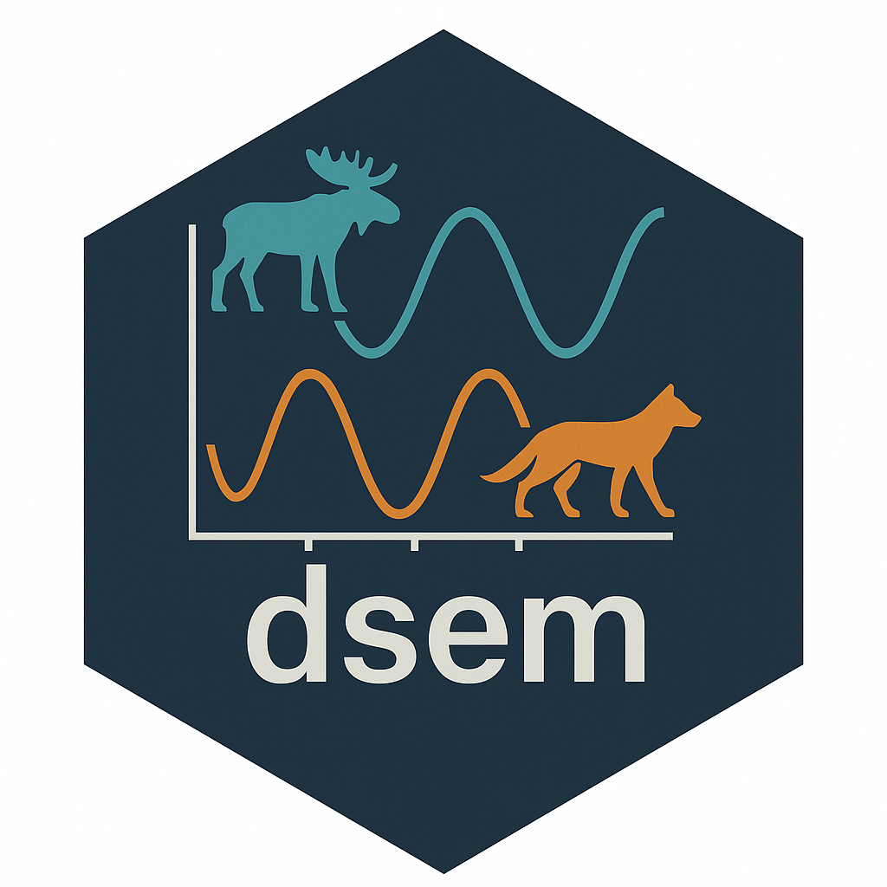
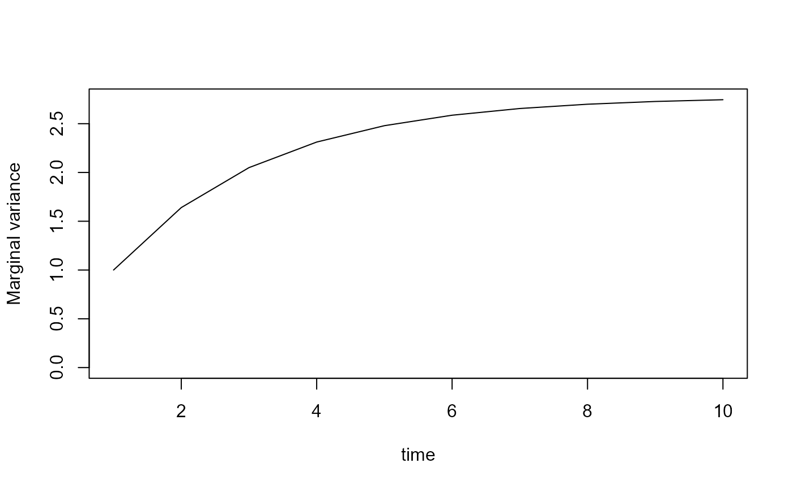
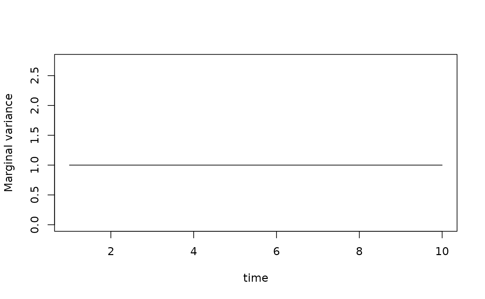

dsem model description
James T. Thorson
Source:vignettes/model-description.Rmd
model-description.RmdDynamic structural equation models
Package dsem (Thorson et al. 2024) involves specifying a dynamic structural equation model (DSEM). This DSEM be viewed either:
- Weak interpretation: as an expressive interface to parameterize the correlation among variables, using as many or few parameters as might be appropriate; or
- Strong interpretation: as a structural causal model, allowing predictions about the consequence of counterfactual changes to the system.
We introduce DSEM first from the perspective of a software user (i.e., the interface) and then from the perspective of a statistician (i.e., the equations and their interpretation).
Viewpoint 1: Software interface
To specify a DSEM, the user uses arrow-and-lag notation,
based on arrow notation derived from package sem
(Fox 2006). For example, to specify a
first-order autoregressive process with variable
this involves:
This then estimates a single parameter representing first-order
autoregression (represented with a one-headed arrow), as well as the
Cholesky decomposition of the exogenous covariance of of model variables
(specified with two-headed arrows). See ?make_dsem_ram
Details section for more details about syntax.
If there were four time-intervals () this would then result in the path matrix:
This joint path matrix then represents the partial effect of each variable and time (column) on each other variable and time (row).
DSEM interactions can be as complicated or simple as desired, and can include:
- Latent variables and loops (i.e., they are not restricted to directed acyclic graphs);
- Values that are fixed a priori, where the
parameter_nameis provided asNAand the starting value that follows is the fixed value; - Values that are mirrored among path coefficients, where the same
parameter_nameis provided for multiple rows of the text file.
The user also specifies a distribution for measurement errors for
each variable using arguement family, and whether each
time-series starts from its stationary distribution or from some
non-equilibrium initial condition using argument
estimate_delta0. If the latter is specified, then variables
will tend to converge back on the stationary distribution at a rate that
is determined by estimated parameters.
Viewpoint 2: Mathematical details
The DSEM defines a generalized linear mixed model (GLMM) for a matrix , where is the measurement in time for variable . This measurement matrix can include missing values , and it will estimate a matrix of latent states for all modeled times and variables, where is the vector of states in time and is a length vector constructed by stacking columns. DSEM also estimates a matrix of process errors where is the vector of process errors in time , and is the vector of stacked columns.
DSEM can be written in structural vector-autoregressive (SVAR) notation as a SVAR model of arbitrary lag, from lag-0 upwards:
where is the matrix of simultaneous interactions (the inclusion of which distinguishes an SVAR from a VAR), and are interactions occurring at lag-1 and lag-2, respectively, and it can also include higher-order lags (not shown here). Additionally, is exogenous covariation in time :
and is the square-root of exogenous covariance that occurs in each time. is then estimated by DSEM, and is identifiable without constraints when specified as a lower-triangle matrix (representing the Cholesky decomposition of the covariance of exogenous process errors occurring in each time).
This VAR notation can also be rewritten as a joint simultaneous equation model (SEM):
where: We sum across the Kronecker product of interaction matrices and lag matrices to obtain the joint path matrix:
where is the Kronecker product, is the lag index, is the highest-order lag that can be included, and is a matrix representing lag-g (see example below). Similarly, the exogenous covariance is constructed from a Kronecker product, although we assume that all covariance is simultaneous (i.e., no lags are allowed for two-headed arrows):
where is a lag-0 (identity) matrix.
For illustration, when and given a maximum lag of 2, we can write as:
and as:
The DSEM then results in Gaussian Markov random field for latent states:
where is a precision matrix such that is the estimated covariance among latent states. This joint precision is itself constructed from the joint path matrix and the joint exogenous covariance matrix :
Finally, it is convenient to write the joint path matrix by summing across path coefficients rather than lags :
where is the lag associated with path coefficient , and is a matrix with only a single non-zero value (with non-zero value equal to path coefficient ).
Say we specify a model with two interactions (one-headed arrows). For each one-headed arrow, we define a path matrix and a lag matrix . For example, in a model with variables and times, and specifying one-headed arrows:
this then results two path matrices:
and with corresponding lag matrices
and
Measurement errors
DSEM includes multiple distribution for measurement errors. For
example, if the user specifies family[j] = "fixed"
then:
for all years. Alternatively, if the
user specifies family[j] = "normal" then:
and
is then included as an estimated parameter. When estimating missing
values or masurement errors in
,
dsem must then marginalize across the latent value of states
.
It does this using the Laplace approximation (Skaug and Fournier 2006), as implemented using
the R-package TMB (Kristensen et al.
2016). Computations involving sparse matrices are efficient using
the Matrix package (Bates et al. 2023) to
interface with the Eigen library (Guennebaud et al. 2010).
These expressions include the matrix representing the ongoing impact of initial conditions for each variable and year, as explained in detail next.
Initial conditions and total effects
Imagine we have some exogenous intervention that caused a matrix of changes . The total effect of this exogenous intervention would then be , and we can calculate any total effect using this matrix inverse (called the “Leontief matrix”). To see this, consider that the first-order effect of change is , but this response then in turn causes a second-order effect , and so on. The total effect is therefore:
where this power-series of direct and indirect effects then results in the Leontief matrix (as long as the is invertible).
We can use this expression to calculate the matrix represents the ongoing effect of initial conditions. It is constructed from a length vector of estimated initial conditions in time , and we construct a matrix where the first row (corresponding to year ) is and all other elements are . The ongoing effect of initial conditions can then be calculated as:
Calculating the effect of initial conditions is in a sense the total effect of in year on subsequent years. Calculating the effect of initial conditions involves inverting , but this is computationally efficient using a sparse LU decomposition.
Constant conditional vs. marginal variance
We have defined the joint precision for a GMRF based on a path matrix and matrix of exogenous covariances. The exogenous (or conditional) variances are stationary for each variable over time, and some path matrices will result in a nonstationary marginal variance. To see this, consider a first-order autoregressive process
dsem = "
x -> x, 1, ar1, 0.8
x <-> x, 0, sd, 1
"We can parse this DSEM and construct the precision using internal functions:
# Load package
library(dsem)
# call dsem without estimating parameters
out = dsem(
tsdata = ts(data.frame( x = rep(1,10) )),
sem = dsem,
control = dsem_control(
run_model = FALSE,
quiet = TRUE
)
)
# Extract covariance
Sigma1 = solve(as.matrix(out$obj$report()$Q_oo))
plot( x=1:10, y = diag(Sigma1), xlab="time",
ylab="Marginal variance", type="l",
ylim = c(0,max(diag(Sigma1))))
where we can see that the diagonal of this covariance matrix is non-constant.
We therefore derive an alternative specification that preserves a stationary marginal variance by rescaling the exogenous (conditional) variance.
Specifically, we see that the marginal variance is:
$$ \mathrm{Var}(\mathbf X) = \mathrm{diag}(\mathbf\Sigma) = \mathbf{ L L}^T \\ \mathbf L = (\mathbf{I - P}_{\mathrm{joint}})^{-1} \mathbf G $$ Given the properties of the Hadamard (elementwise) product, this can be rewritten as:
Now suppose we have a desired vector of length for the constant marginal variance . We can solve for the exogenous covariance that would result in that marginal variance:
and we can then rescale the exogenous covariance:
and then using this rescaled exogenous covariance when constructing the precision of the GMRF. We can see this again using our first-order autoregressive example
# call dsem without estimating parameters
out = dsem(
tsdata = ts(data.frame( x = rep(1,10) )),
sem = dsem,
control = dsem_control(
run_model = FALSE,
quiet = TRUE,
constant_variance = "marginal"
)
)
# Extract covariance
Sigma2 = solve(as.matrix(out$obj$report()$Q_oo))
plot( x=1:10, y = diag(Sigma2), xlab="time",
ylab="Marginal variance", type="l",
ylim = c(0,max(diag(Sigma1))))
This shows that the corrected (nonstationary) exogenous variance results in a stationary marginal variance for the AR1 process. This correction can be done in two different ways that are identical when the exogenous covariance is diagonal (as it is in this simple example), but differ when specifying some exogenous covariance. However, we do not discuss this in detail here. Note that this calculating this correction for a constant marginal variance requires the inverse of the squared values of Leontief matrix (which is itself a matrix inverse). It therefore is computationally expensive for large models containing complicated dependencies.
Reduced rank models
We note that some DSEM specifications will be reduced rank. This arises for example when specifying a dynamic factor analysis, where variables are explained by factors that each follow a random walk:
#
dsem = "
# Factor follows random walk with unit variance
F <-> F, 0, NA, 1
F -> F, 1, NA, 1
# Loadings on two manifest variables
F -> x, 0, b_x, 1
F -> y, 0, b_y, 1
# No residual variance for manifest variables
x <-> x, 0, NA, 0
y <-> y, 0, NA, 0
"
data = data.frame(
x = rnorm(10),
y = rnorm(10),
F = rep(NA,10)
)
# call dsem without estimating parameters
out = dsem(
tsdata = ts(data),
sem = dsem,
family = c("normal","normal","fixed"),
control = dsem_control(
run_model = FALSE,
quiet = TRUE,
gmrf_parameterization = "project"
)
)We can extract the covariance and inspect the eigenvalues:
# Extract covariance
library(Matrix)
IminusRho_kk = out$obj$report()$IminusRho_kk
G_kk = out$obj$report()$Gamma_kk
Q_kk = t(IminusRho_kk) %*% t(G_kk) %*% G_kk %*% IminusRho_kk
# Display eigenvalues
eigen(Q_kk)$values
#> [1] 3.91114561 3.65247755 3.24697960 2.73068205 2.14946019 1.55495813
#> [7] 1.00000000 0.53389626 0.19806226 0.02233835 0.00000000 0.00000000
#> [13] 0.00000000 0.00000000 0.00000000 0.00000000 0.00000000 0.00000000
#> [19] 0.00000000 0.00000000 0.00000000 0.00000000 0.00000000 0.00000000
#> [25] 0.00000000 0.00000000 0.00000000 0.00000000 0.00000000 0.00000000where this shows that the precision has a rank of 10 while being a matrix. We therefore cannot evaluate the probability density of state matrix using this precision matrix (i.e., the log-determinant is not defined).
To address this circumstance, we can switch to using
gmrf_parameterization = "project". This evaluates the
probability density of a set of innovations
that follow a unit variance:
and then projects these full-rank innovations to the reduced rank states:
This parameterization allows us to fit DSEM using a rank-deficient structural model.